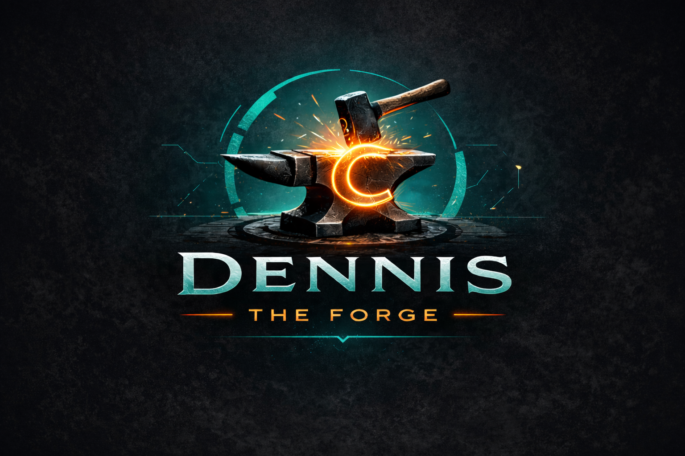

Comienza con Dennis Forge

Ya seas desarrollador independiente, parte de un equipo, educador o una empresa, hay un lugar para ti en la Forjaduría.

Tu primer DEX en 5 minutos
La forma más sencilla de entender Dennis es crear tu primer artefacto. Sigue el tutorial de Hello Dennis y observa todo el flujo de trabajo en acción.
1. Escribe
Crea un plan de transformación.
2. Valida
Verifica que el plan sea determinista.
3. Aplica
Ejecuta la transformación.
4. Empaqueta
Crea un artefacto DEX portable.
¿Listo para probarlo?
Clona el repositorio y crea tu primer artefacto determinista en menos de cinco minutos.
Comenzar Hello DennisClona el repositorio
Descarga el proyecto de ejemplo Hello Dennis.
git clone https://github.com/crevilla2050/hello-dennis
cd hello-dennis
Inspecciona tu primer artefacto
Inspecciona, rehidrata y aplica tu primer artefacto.
dennis inspect hello.dex
dennis rehydrate hello.dex
dennis apply plan.json
Ejecuta tu primer plan
Genera tu primer artefacto.
Inspecciona el DEX
Abre el artefacto y comprende cómo funciona Dennis.
Elige tu camino
Comienza donde estás hoy y crece junto con Dennis Forge.
Prueba el CLI
Descarga el CLI de Dennis, gratuito y de código abierto, y comienza hoy mismo a crear transformaciones deterministas.
Descargar CLIHello Dennis
Clona el repositorio de Hello Dennis y crea tu primera transformación determinista en solo unos minutos.
Usa Dennis Forge
Crea proyectos, sube artefactos y colabora mediante la plataforma alojada de la Forjaduría.
Crear cuentaAloja Dennis tú mismo
Despliega Dennis Forge dentro de tu organización y mantén el control completo sobre tu infraestructura y tus datos.
Más informaciónPrograma Académico
Planes gratuitos y con descuento para estudiantes, educadores e instituciones de investigación.
Más informaciónConviértete en Fundador
Únete a las primeras 161 personas que están ayudando a forjar el futuro de Dennis.
Hazte Fundador